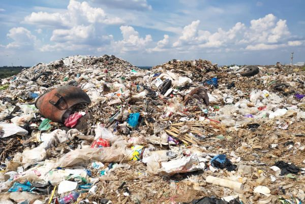
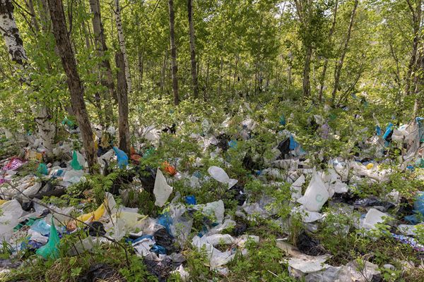
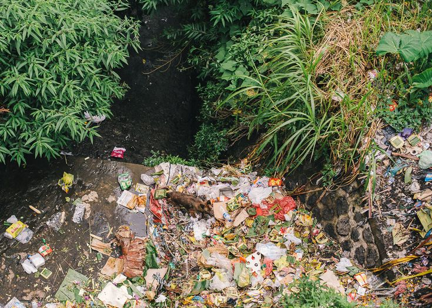
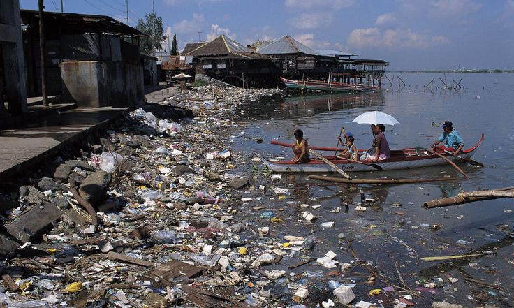
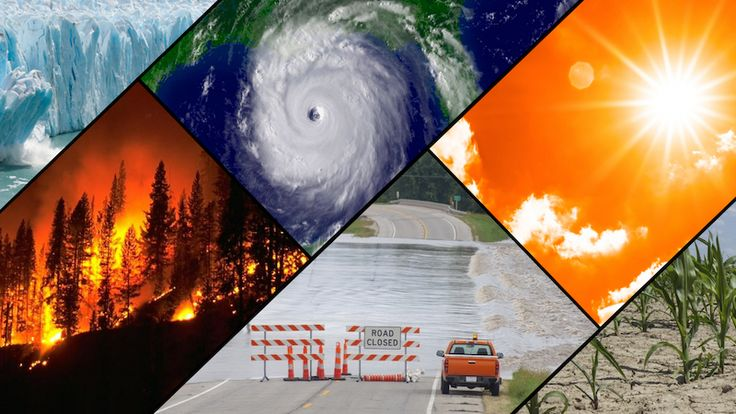
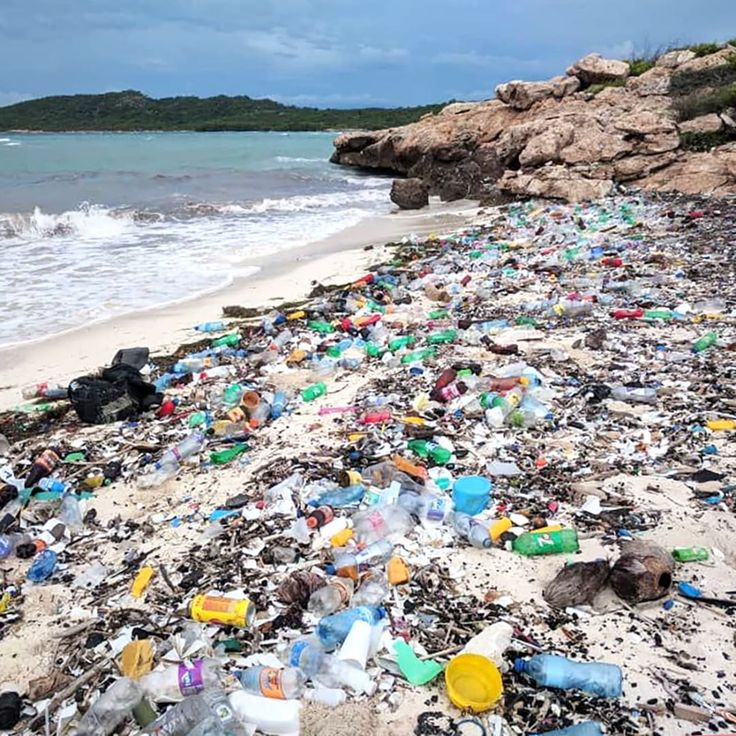
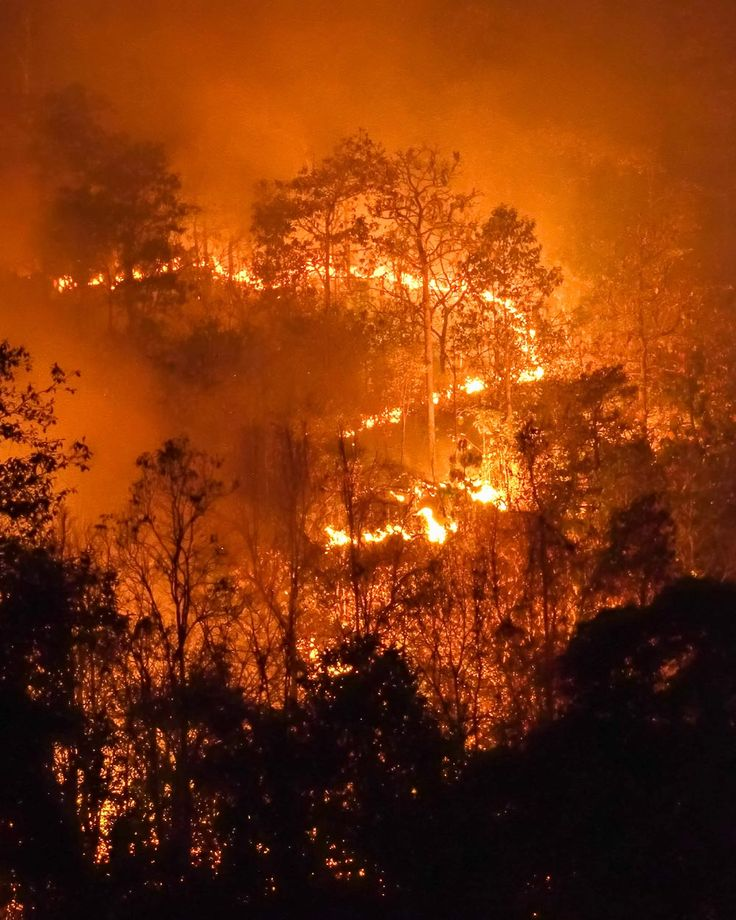
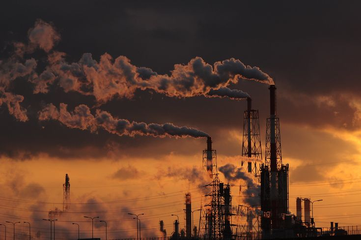
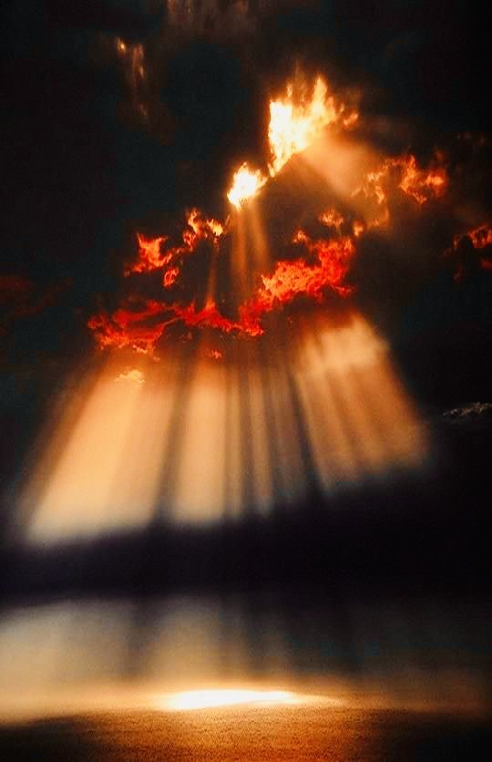

THE LAND
A threat to our Earth



Litter, plastic waste, pesticides, and other chemicals can pollute soil and harm the places where plants and animals live.
Nature gives us everything we need to thrive. Discover its beauty, understand the pressures it faces, and see how small actions can make a difference.
Explore the storyThe environment is all around us. Explore the living and non-living parts of our world and the balance they create.
Select an image to learn more
From the air we breathe to the places wildlife calls home, the natural world supports every part of life.
Our choices can leave lasting marks on land, water, and air. Understanding the damage is the first step toward change.



Litter, plastic waste, pesticides, and other chemicals can pollute soil and harm the places where plants and animals live.



Rubbish thrown into rivers and oceans, along with oil spills, damages water resources and threatens aquatic life.



Air pollution affects the atmosphere we depend on. Protecting trees and reducing harmful emissions helps keep air cleaner.
At Aung San Thuriya Hla Taung High School, students turn care for the environment into everyday action.
Select a picture to see what our school is doing
Fifteen questions about our world and the ways we can care for it.
Clean up litter. Removing litter keeps shared spaces cleaner and reduces harm to plants and animals.
They provide habitats. Forests give wildlife places to live and support biodiversity.
Reuse them. Reusing materials reduces the need for new resources and creates less waste.
To prevent blockages. Waste can block drains and cause water to collect or overflow.
Plant trees. Trees can help improve air quality and create healthier spaces.
Continue exploring environmental protection, wildlife, and visual inspiration.
The environment sustains every living thing. When we understand its value and the harm pollution causes, we can make better choices. By reducing waste, protecting water, and caring for trees, each of us can help create a healthier future.
Back to the beginning